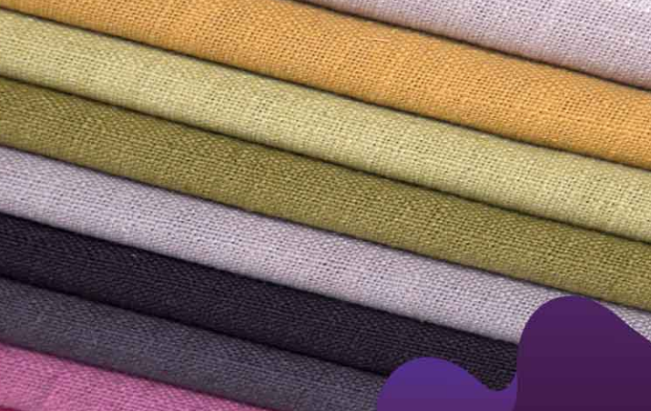

Sejarah
Sejarah kain dapat ditelusuri sejak ribuan tahun yang lalu. Pada zaman prasejarah, manusia mulai menggunakan kulit binatang dan daun untuk menutupi tubuh mereka. Namun, pada saat manusia mulai mengembangkan teknologi untuk menenun, membuat benang dan memintal, kain pun mulai diproduksi.
Sejarah kain berkembang dengan pesat di berbagai negara di dunia. Di Mesir kuno, kain linen menjadi salah satu kain yang paling populer dan dikenal sebagai kain yang halus dan kuat. Di Asia, kain sutra menjadi salah satu kain paling mewah dan dihargai. Di Eropa, kain wol menjadi sangat populer, terutama di negara-negara yang memiliki iklim dingin.
Pada abad ke-19, proses produksi kain menjadi semakin mekanis dengan adanya mesin tenun dan mesin tekstil. Hal ini memungkinkan produksi kain menjadi lebih cepat dan efisien, dan membuat kain menjadi lebih terjangkau bagi masyarakat umum. Pada saat yang sama, bahan sintetis seperti polyester juga mulai digunakan untuk membuat kain.
Dalam beberapa tahun terakhir, terdapat peningkatan permintaan akan kain yang lebih ramah lingkungan dan berkelanjutan. Banyak produsen kain telah beralih ke bahan-bahan organik seperti kapas organik atau serat bambu untuk menghasilkan kain yang lebih ramah lingkungan. Teknologi baru juga dikembangkan untuk membuat kain dari sumber daya alam yang tidak konvensional seperti jamur dan susu.
Dalam keseluruhan, kain telah melihat banyak perubahan dan perkembangan dari teknologi tradisional hingga modern, serta semakin terbuka pada inovasi dan teknologi baru. Kain telah menjadi bagian penting dari budaya dan ekonomi di berbagai negara di seluruh dunia.
Jenis Kain

Berikut adalah beberapa jenis kain yang umum digunakan
Katun
Salah satu jenis kain yang paling umum dan populer di dunia. Kain katun terbuat dari serat kapas, yang berasal dari bunga kapas. Kain katun memiliki serat yang lembut, halus, dan mudah menyerap keringat. Selain itu, kain katun juga sangat mudah diproses dan diwarnai, sehingga sangat cocok untuk digunakan dalam berbagai macam pakaian dan tekstil.
Beberapa karakteristik kain katun antara lain:
- Nyaman: Kain katun sangat nyaman digunakan karena seratnya yang lembut dan halus, sehingga memberikan rasa nyaman pada kulit.
- Menyerap keringat: Kain katun memiliki kemampuan menyerap keringat yang baik, sehingga dapat membuat penggunanya merasa lebih segar dan nyaman.
- Tidak mudah rusak: Kain katun sangat tahan lama dan tidak mudah rusak, sehingga cocok untuk digunakan dalam pakaian sehari-hari.
- Mudah dicuci: Kain katun mudah dicuci dan dirawat, sehingga sangat praktis digunakan dalam kehidupan sehari-hari.
- Tersedia dalam berbagai pola dan warna: Kain katun tersedia dalam berbagai pola dan warna, sehingga dapat disesuaikan dengan selera dan kebutuhan penggunanya.
Kain katun biasanya digunakan dalam pembuatan pakaian sehari-hari, seperti kaos, kemeja, celana, rok, dan lain-lain. Selain itu, kain katun juga digunakan dalam pembuatan tekstil rumah tangga, seperti seprai, handuk, dan lain-lain. Kain katun juga sering digunakan sebagai bahan dasar untuk pembuatan kain campuran, seperti kain katun-poliester dan kain katun-serat alami lainnya.
Sutra
Kain sutra merupakan salah satu jenis kain mewah yang dihasilkan dari serat sutra. Sutra adalah serat alami yang berasal dari kelenjar ulat sutra, dan serat ini sangat kuat, elastis, dan bersifat menyerap cairan dengan baik. Kain sutra terkenal karena kemewahan, kemilau, dan kehalusannya. Berikut adalah beberapa karakteristik kain sutra:
- Kemewahan: Kain sutra terkenal karena kemewahan dan keanggunannya. Kain sutra memiliki kilau yang unik dan halus yang memberikan kesan kemewahan yang khas.
- Kelembutan: Kain sutra sangat lembut dan halus, dan sangat nyaman ketika dipakai. Serat sutra juga sangat tipis, sehingga kain sutra sangat ringan dan nyaman digunakan.
- Kualitas: Kain sutra sangat kuat dan tahan lama, bahkan lebih kuat daripada kain katun atau wol. Kain sutra juga tidak mudah kusut dan tahan lama terhadap penggunaan.
- Tahan terhadap bakteri: Kain sutra juga memiliki sifat tahan terhadap bakteri dan jamur, sehingga sangat cocok untuk digunakan pada pakaian atau bahan-bahan medis.
- Sifat menyerap cairan: Sutra memiliki sifat menyerap cairan dengan baik, sehingga kain sutra sangat mudah menyerap keringat dan sangat cocok digunakan pada musim panas.
Kain sutra umumnya digunakan untuk membuat pakaian mewah seperti gaun, jas, blus, dan rok. Selain itu, kain sutra juga sering digunakan untuk membuat linen rumah tangga seperti seprai, bantal, dan gorden. Meskipun sutra sangat mahal, tetapi permintaan kain sutra tetap tinggi karena kemewahan dan kelembutannya yang tak tertandingi. Namun, karena serat sutra hanya dapat dihasilkan dalam jumlah yang terbatas, maka kain sutra biasanya lebih mahal daripada jenis kain lainnya.
Wool
Kain wool adalah jenis kain yang terbuat dari bulu domba atau kambing. Karakteristik kain wool yang paling menonjol adalah kehangatan dan kelembutan, karena serat wol memiliki ciri-ciri yang unik.
Berikut adalah beberapa karakteristik kain wool:
- Hangat: Wol memiliki kemampuan isolasi panas yang sangat baik, sehingga kain wool sangat cocok untuk digunakan pada pakaian musim dingin.
- Kekuatan: Wol sangat kuat dan tahan lama, sehingga kain wool sangat awet dan tahan lama.
- Kualitas: Kain wool juga sangat mudah dicuci dan merawatnya, dan serat wol memiliki sifat tahan luntur.
- Kemampuan menyerap uap air: Wol memiliki kemampuan menyerap uap air dengan baik, sehingga pakaian wol sangat nyaman dipakai pada cuaca yang lembab.
- Elastisitas: Wol juga sangat elastis dan lentur, sehingga kain wool sangat cocok digunakan pada pakaian yang memerlukan fleksibilitas seperti jas atau coat.
Kain wool umumnya digunakan untuk membuat pakaian musim dingin seperti jas, coat, sweater, dan kaus kaki. Selain itu, kain wool juga sering digunakan untuk membuat karpet, selimut, dan peralatan rumah tangga lainnya. Kain wool tersedia dalam berbagai jenis, dari yang paling halus hingga yang paling kasar, tergantung pada jenis domba atau kambing yang digunakan dan cara pengolahan serat wol tersebut. Kain wool juga tersedia dalam berbagai warna dan pola, sehingga sangat fleksibel dalam penggunaannya. Namun, karena sifat wol yang menyerap air dan kurang tahan terhadap paparan sinar matahari, kain wool memerlukan perawatan yang khusus untuk menjaga kelembutannya dan mencegah kerusakan pada serat wol.
Linen

Jenis kain yang terbuat dari serat tanaman linen. Linen biasanya dihasilkan dari tanaman flax (linum usitatissimum), dan mempunyai serat yang kuat, halus, dan lentur. Linen adalah salah satu jenis kain tertua di dunia, dan telah digunakan sejak ribuan tahun yang lalu.
Berikut adalah beberapa karakteristik kain linen:
- Keren: Kain linen terkenal akan kekuatannya yang luar biasa dan daya tahan yang sangat baik. Hal ini disebabkan oleh serat linen yang kuat dan kokoh.
- Kering dan Dingin: Linen memiliki kemampuan menyerap kelembaban dengan sangat baik, dan cepat untuk mengering, sehingga kain linen sangat cocok digunakan pada cuaca yang panas dan lembab.
- Tahan lama: Kain linen sangat awet dan tahan lama, karena serat linen memiliki ketahanan yang sangat baik terhadap aus dan robek.
- Mudah dijaga: Kain linen mudah dirawat, dan seringkali cukup dicuci dengan mesin dan kemudian dikeringkan dengan cara dijemur.
- Ramah Lingkungan: Linen adalah bahan alami dan ramah lingkungan, karena serat linen dapat terurai dan mudah didaur ulang.
Kain linen sering digunakan untuk membuat pakaian musim panas seperti baju, blus, celana, dan gaun, serta peralatan rumah tangga seperti sprei, serbet, dan handuk. Linen juga sering digunakan dalam industri kerajinan tangan dan seni rupa, seperti bordir, quilting, dan lukisan.
Namun, kain linen juga memiliki beberapa kelemahan, seperti kurang fleksibel dan mudah berkerut. Selain itu, kain linen cenderung mudah berubah bentuk setelah dicuci dan dapat menyusut, sehingga memerlukan perawatan khusus agar tetap tahan lama dan terlihat baik.
Poliester
Kain poliester adalah jenis kain yang terbuat dari serat sintetis poliester. Serat poliester diproduksi melalui proses kimia dari minyak bumi dan bahan-bahan kimia lainnya, kemudian diolah menjadi benang atau serat kain yang kemudian dijadikan sebagai bahan dasar kain poliester.
Berikut adalah beberapa karakteristik kain poliester:
- Tahan lama: Kain poliester sangat tahan lama dan kokoh, karena serat poliester memiliki ketahanan yang sangat baik terhadap robek dan aus.
- Tahan luntur: Kain poliester memiliki ketahanan yang sangat baik terhadap sinar matahari dan bahan kimia, sehingga warnanya tidak mudah pudar.
- Tidak kusut: Kain poliester cenderung tidak mudah berkerut atau kusut, dan mudah dirawat dan dijaga.
- Mudah dirawat: Kain poliester seringkali cukup dicuci dengan mesin dan kemudian dikeringkan dengan cara digantung atau dijemur.
- Tidak menyerap air: Kain poliester memiliki kemampuan menyerap air yang rendah, sehingga tidak cocok digunakan pada cuaca yang panas dan lembab.
Kain poliester sering digunakan untuk membuat pakaian seperti baju, celana, dan jas, serta produk-produk rumah tangga seperti seprai, gordyn, dan taplak meja. Poliester juga sering digunakan dalam industri tekstil dan pakaian, karena harganya yang relatif murah dan kemampuannya untuk menghasilkan warna yang cerah dan tajam.
Namun, kain poliester juga memiliki beberapa kelemahan, seperti kurang nyaman dan kurang berdaya serap terhadap keringat, sehingga dapat menimbulkan bau badan. Selain itu, kain poliester tidak ramah lingkungan, karena berasal dari bahan sintetis yang sulit terurai dan sulit didaur ulang. Oleh karena itu, kain poliester harus dijaga dengan baik agar tetap awet dan ramah lingkungan.
Rayon
Kain rayon adalah jenis kain yang terbuat dari serat sintetis atau semisintetis yang berasal dari selulosa, yang kemudian diproduksi melalui proses kimia. Kain rayon seringkali dianggap sebagai bahan alternatif untuk sutra karena memiliki tekstur dan tampilan yang mirip, namun harganya lebih murah.
Berikut adalah beberapa karakteristik kain rayon:
- Lembut dan nyaman: Kain rayon memiliki tekstur yang lembut dan nyaman, sehingga sering digunakan untuk membuat pakaian dalam, kaos, dan baju tidur.
- Menyerap keringat: Kain rayon memiliki daya serap yang baik terhadap keringat, sehingga cocok digunakan pada cuaca panas dan lembab.
- Mudah menyerap warna: Kain rayon mudah menyerap pewarna dan menghasilkan warna yang cerah dan tajam.
- Rentan terhadap kerut: Kain rayon cenderung mudah berkerut dan sulit dirawat.
- Tidak tahan lama: Kain rayon kurang tahan lama dan mudah rusak jika tidak dirawat dengan baik.
Kain rayon sering digunakan untuk membuat pakaian seperti baju, celana, rok, dan kaos, serta produk-produk rumah tangga seperti seprai dan selimut. Kain rayon juga sering digunakan sebagai bahan dasar untuk kain campuran dengan serat lain, seperti katun dan polyester.
Namun, kain rayon juga memiliki beberapa kelemahan, seperti rentan terhadap kerut, sulit dirawat, dan kurang tahan lama. Selain itu, kain rayon dapat mengecil setelah dicuci, sehingga perlu diperhatikan saat mencucinya. Kain rayon juga mudah meleleh jika terkena panas, sehingga harus dijaga saat digosok atau disetrika.
Denin
Denim adalah jenis kain tebal yang terbuat dari benang katun yang diwarnai indigo pada bagian depan dan putih pada bagian belakang. Kain ini awalnya digunakan untuk membuat pakaian kerja seperti celana jeans dan jaket denim, tetapi sekarang telah menjadi populer untuk berbagai macam pakaian seperti rok, tas, topi, dan sepatu.
Berikut adalah beberapa karakteristik kain denim:
- Kuat dan tahan lama: Kain denim sangat kuat dan tahan lama, sehingga sering digunakan untuk membuat pakaian yang sering digunakan dan dapat bertahan lama.
- Tahan luntur: Warna indigo pada kain denim cenderung tahan luntur, sehingga kain ini seringkali menjadi pilihan untuk pakaian yang sering dicuci.
- Stabil dan tidak mudah melar: Kain denim stabil dan tidak mudah melar, sehingga bentuk pakaian yang terbuat dari denim cenderung tidak berubah setelah sering dicuci dan digunakan.
- Tidak mudah kusut: Kain denim cenderung tidak mudah kusut, sehingga perawatan dan penggunaannya cukup mudah.
- Tidak terlalu elastis: Kain denim tidak terlalu elastis dan lebih kaku dibandingkan dengan bahan seperti katun atau spandex.
Kain denim dapat ditemukan dalam berbagai warna dan variasi seperti polos, bercorak, dan bahkan digambari atau dicetak. Jenis denim yang paling umum adalah selvedge denim, yang terbuat dari mesin tenun tradisional dan dikenal dengan tepian berlapis-lapis di ujung kainnya. Jenis denim lainnya adalah raw denim, yaitu jenis denim yang belum diproses dan masih menampilkan warna asli dari indigo.
Kain denim sangat populer di seluruh dunia dan sering digunakan untuk membuat pakaian yang nyaman dan stylish. Meskipun kain denim cenderung tahan lama, tetap perlu dirawat dengan baik agar tidak cepat aus dan kehilangan kekuatannya.
Itu hanya beberapa jenis kain yang umum digunakan. Terdapat banyak jenis kain lainnya, termasuk kain sutera sintetis, kain flanel, kain brokat, dan kain sutra buatan.
Pabrik
Berikut adalah tiga pabrik terbesar di Indonesia dalam industri kain
PT Sri Rejeki Isman Tbk
Pabrik kain terbesar di Indonesia saat ini adalah PT Sri Rejeki Isman Tbk (atau lebih dikenal dengan nama Sritex), yang berlokasi di Sukoharjo, Jawa Tengah. Sritex adalah perusahaan tekstil terbesar di Indonesia dan salah satu produsen kain terbesar di dunia. Perusahaan ini memiliki lebih dari 60.000 karyawan dan memproduksi berbagai jenis kain, seperti kain denim, kain katun, kain poliester, kain rayon, dan banyak lagi.
Selain itu, Sritex juga memproduksi pakaian jadi, seperti kemeja, celana, jaket, dan lain-lain. Produk-produk Sritex dipasarkan ke berbagai negara di seluruh dunia, termasuk ke Eropa, Amerika Serikat, dan Asia. Sritex juga aktif dalam mendukung program pemerintah Indonesia dalam mengembangkan industri tekstil nasional dan menciptakan lapangan kerja bagi masyarakat Indonesia.
PT Indo-Rama Synthetics Tbk
Pabrik kedua terbesar di Indonesia dalam industri kain adalah PT Indo-Rama Synthetics Tbk. Perusahaan ini berlokasi di Purwakarta, Jawa Barat, dan merupakan salah satu produsen kain sintetis terbesar di Indonesia. PT Indo-Rama Synthetics Tbk memproduksi berbagai jenis kain, seperti kain poliester, kain nilon, dan kain blended (campuran antara serat alami dan sintetis).

Produk-produk perusahaan ini digunakan untuk berbagai keperluan, seperti pakaian, furnitur, kantong tidur, tas, dan lain-lain. PT Indo-Rama Synthetics Tbk juga memproduksi serat sintetis dan bahan baku kimia untuk keperluan industri tekstil. Perusahaan ini memiliki kapasitas produksi kain sekitar 95 juta meter per bulan dan ekspor produknya ke berbagai negara di seluruh dunia.
Pabrik ketiga terbesar di Indonesia dalam industri kain adalah PT Pan Brothers Tbk. Perusahaan ini berlokasi di Tangerang, Banten, dan merupakan salah satu produsen pakaian jadi dan kain terbesar di Indonesia. PT Pan Brothers Tbk memproduksi berbagai jenis pakaian jadi, seperti kemeja, celana, jaket, dan lain-lain, serta berbagai jenis kain, seperti kain denim, kain katun, kain poliester, dan kain blended.
Perusahaan ini memproduksi pakaian jadi dan kain untuk merek-merek terkenal di dunia, termasuk Uniqlo, Zara, H&M, dan lain-lain. PT Pan Brothers Tbk memiliki kapasitas produksi kain sekitar 5 juta meter per bulan dan mempekerjakan lebih dari 23.000 karyawan di seluruh dunia. Selain itu, perusahaan ini juga aktif dalam mendukung program pemerintah Indonesia dalam meningkatkan daya saing industri tekstil nasional.